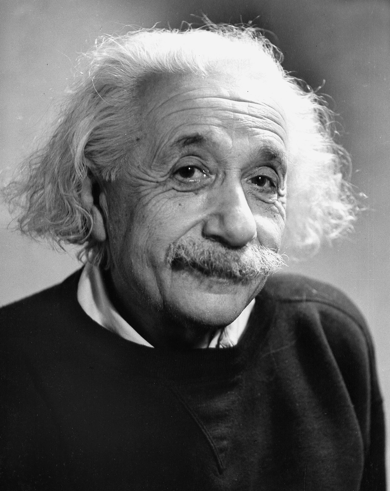

Albert Einstein was a renowned theoretical physicist whose name has become synonymous with genius. Born on March 14, 1879, in Ulm, in the Kingdom of Württemberg in the German Empire, Einstein revolutionized our understanding of the universe with his groundbreaking theories of relativity. His contributions to science reshaped the way we perceive space, time, and energy, earning him a place among the most influential figures in human history.
BIOGRAPHY

Early Life and Education:
Albert Einstein was born to Hermann Einstein and Pauline Koch. His father, a salesman and engineer, and his mother, a homemaker, provided a nurturing environment for young Albert's intellectual curiosity to flourish. However, his early years were marked by academic struggles, leading some to believe he might have had learning difficulties. Nonetheless, his fascination with mathematics and physics was evident from an early age. Einstein attended the Swiss Federal Polytechnic School in Zurich, where he pursued a degree in physics and mathematics. Despite facing challenges in the traditional academic environment, he excelled in his studies and graduated in 1900.
Career and Achievements:
After completing his education, Einstein struggled to find employment as a professor due to his unorthodox views and unconventional personality. He worked at various odd jobs before securing a position as a patent examiner at the Swiss Patent Office in Bern. It was during his time there, in 1905, that Einstein published four groundbreaking papers that would forever change the course of physics. His most famous work, the Special Theory of Relativity, proposed that the laws of physics are the same for all non-accelerating observers and introduced the concept of space-time. This theory, encapsulated in the famous equation E=mc², demonstrated the equivalence of mass and energy, laying the foundation for nuclear physics and the development of atomic energy. In 1915, Einstein completed his General Theory of Relativity, which expanded upon his earlier work and provided a new understanding of gravity as the curvature of spacetime caused by mass and energy. This theory revolutionized our understanding of the universe, leading to groundbreaking discoveries in cosmology and astrophysics. Throughout his career, Einstein made significant contributions to quantum theory, statistical mechanics, and cosmology. He received numerous awards and honors, including the Nobel Prize in Physics in 1921 for his discovery of the photoelectric effect.
Later Years and Legacy:
Einstein's fame only grew as he continued to advocate for pacifism, civil rights, and scientific cooperation. He became a prominent public figure, using his platform to champion social causes and warn against the dangers of nuclear proliferation. In 1933, Einstein emigrated to the United States to escape the rising tide of anti-Semitism in Europe. He accepted a position at the Institute for Advanced Study in Princeton, New Jersey, where he spent the remainder of his career. Albert Einstein passed away on April 18, 1955, leaving behind a legacy that continues to inspire scientists, philosophers, and thinkers around the world. His theories have fundamentally altered our understanding of the universe and laid the groundwork for countless technological advancements.